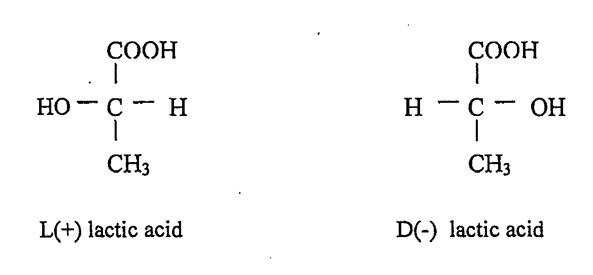

Definition of Lactic Acid

LACTIC ACID
IUPAC Name: 2-Hydroxypropanoic acid
Other Name: Milk Acid
Molecular Formula: C3H6O3
Lactic acid comes from the Latin language lactis which means milk (Anonymous, 2001). Zattersebut is a type of organic acid that is colorless, can be mixed with water, ethanol and diethyl ether and plays an important role in some biochemical processes. This substance was firstly found in sour milk as a fermentation of a sugar or lactose compound (Indo Chemical, 1990) and can be naturally formed in various products by the fermentation process, such as pickled cabbage, cheese, and wine and can also be produced by human and animal tissues from carbohydrate metabolism (Nuraeni, 1987). Acamlactate is an additive in the food industry and raw materials of the polymer industry biodegradable (BPPT, 2005). This substance is also a natural preservative that can prevent bacterial decay (Fallon and Enig, 2003)
Lactic acid is an organic compound with the formula CH3CH(OH)COOH. In its solid state, it is white and water-soluble. In its liquid state, it is colorless. It is produced both naturally and synthetically. With a hydroxyl group adjacent to the carboxyl group, lactic acid is classified as an alpha-hydroxy acid (AHA). In the form of its conjugate base called lactate, it plays a role in several biochemical processes.
Lactic acid is a potential multifunctional organic acid produced on a large scale. First produced commercially by Charles E. Avery in Littleton, Massachusetts, USA in 1881 (Pramuditio Derry, et al., 2013).
Lactic acid is a chiral acid (asymmetric acid) having two optical isomers L (+) - lactic acid and D (-) - lactic acid. Only lactic acid L (+) - lactic acid (sarcolactic acid, paralactic acid) is found in the human body. L (+) - lactic acid and D (-) - lactic acid are found in almost all biological systems (Jin Bo et al., 2005).
Below this page are showed two optical isomers of lactic acid :
